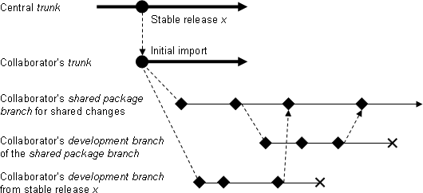
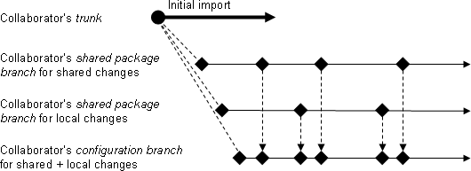
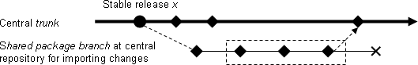
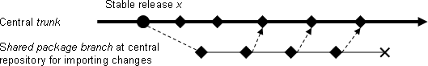
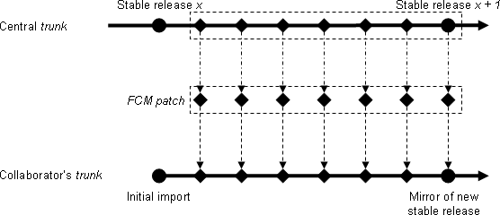
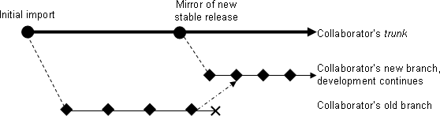
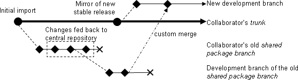

Introduction
This document describes how projects configured under FCM can be distributed externally. Particular attention is given to collaborative distributions - where the external user regularly returns code for consolidation into the central repositories which hold the master copies of the code.
Note: This document assumes that the repositories are inaccessible to the external user, due to issues of security and practicality.
Creating a Distribution
A system configured under FCM can be distributed by packaging a known revision (usually corresponding to a stable release) into an archive (e.g. a tarball) of directories and files. Various issues need to be considered:
- A distribution may contain a variety of different files including source code, scripts, benchmark and validation tests, documentation, etc.
- A system may consist of several different projects which should be put into separate directories in the distribution. Please refer to the section Repository design in the FCM user guide for an explanation of what is meant by a project in this context.
- Some files in a project may not be included in the distribution. This may be because they are of no interest to external users or because of license restrictions. Such files will need to be filtered out when creating the distribution.
- The distribution may also contain some files which are not maintained under FCM version control (test results for instance).
- Some systems share code with other systems.
- If a distribution is intended to be used standalone then the necessary files from these other systems will need to be included. e.g. The VAR system requires code from the OPS and GEN systems.
- If the distribution is part of a wider collaboration then it is likely that the files from the other systems will be distributed separately. It is best if stable releases of the various systems can be synchronised so that, for example, a VAR stable release uses code from an OPS stable release which both use code from the same GEN release.
- Release notes should be prepared to accompany a distribution which explain, among other things, how the distribution is structured.
- The distribution should contain a file which identifies the repository revision(s) contained in the distribution.
- System managers will probably wish to maintain a script which automates the generation of these distributions.
Feeding Back Changes
Although we would encourage all collaborators to make use of the FCM system for version control, we recognise that they may already have their own preferred systems in place. There is no particular problem with this. The main requirement is that any proposed changes are provided as a modification relative to the provided distribution. The changeset could be provided in the form of a modified project tree or as a patchfile (refer to the later section Exchanging Changesets using Patchfiles for further discussion). If the change involves any renaming or removal of files or directories then special instructions should be provided plus a script to perform the changes.
At the central repository, the changeset should be applied to a branch created from the repository revision which formed the basis of the changeset (possibly making use of the Subversion utility svn_load_dirs.pl). Note that extra care is needed with changesets provided as modified project trees if there are any files in the project which are excluded from the distribution. Once imported, the changeset should then undergo any necessary testing or review before being merged into the trunk.
Collaborating Using FCM for Version Control
There are a number of advantages if the FCM system is used for version control by the collaborator. In particular it means that:
- Collaborators will be able to see all of the individual changesets which went in to a new release rather than only being able to view each new release as one big change.
- The process of sending a proposed change to the central repository can be standardised through the use of an FCM patch (explained later).
- The FCM Extract system can be fully utilised.
- Common tools will help to ease communication. We will all use technical terms to mean the same thing.
This section explains the recommended way of using FCM in a collaboration.
Initialising the Subversion Repositories
The collaborator needs to set up a repository and import each of the projects. Please see the section Creating a repository in the FCM user guide for advice. Collaborators may wish to use separate repositories and Trac systems for each project or they may prefer to use a single repository for all projects and use a single Trac system. Either option should be fine so long as the same set of projects is retained.
After completing the initial import, the collaborator should have the required set of projects available in Subversion where the initial version of the trunk of each project corresponds with the initial stable release provided in the distribution.
Preparing Changes at the Collaborator's Site
The recommended way of preparing changes is illustrated in Figure 1a:
Figure 1a: working at the collaborator's site

The collaborator will create a shared package branch from the latest stable release on the trunk. This branch will contain all the changes that will eventually be fed back to the central repository. Developers will also create their own development branches. These may be branched from the latest stable release on the trunk. Alternatively, if the change needs to build on other changes then a branch can be created from the shared package branch. When the changes are ready (i.e. tested, documented, reviewed, etc) then they are merged into the shared package branch. The trunk is not used for the shared changes as it is reserved for changes received from the central repository.
Should it be required, a second shared package branch can be created from the same point to contain any local modifications that will not be fed back to the central repository. A configuration branch can then be used to combine the local changes with those destined to be fed back. This is illustrated in Figure 1b:
Figure 1b: managing local changes

Feeding Back Changes Using FCM
Eventually, a series of changesets will exist on the first package branch.
These changes will be fed back to the central repository via an FCM
patch. This contains a series of differences associated with changesets
in a given branch of development, created by the fcm mkpatch
command. For further information about the command, please refer to its
command
reference in the FCM user guide.
At the central repository, the changeset will be applied to a branch created from the repository revision which formed the basis of the changeset. This is illustrated in Figure 2:
Figure 2: feeding back changes

Patches will usually be exchanged in the form of a tarball. To apply the
patch it must first be extracted to a directory. In this directory there
should be a shell script called fcm-import-patch. A TARGET needs
to be specified when invoking the script. The TARGET must either be a URL or
a working copy of a valid project tree that can accept the import of the
patches. It is essential that this target matches the version of the project
from which the patch was created (usually this means a particular stable
release). The script contains a series of cp and
svn commands to import the changesets one by one. Note that the
changesets are committed automatically with no user interaction. It is worth
ensuring that an up to date backup of the repository is available in case of
problems.
Incorporating Changes into the Trunk of the Central Repository
Once the changes have undergone any necessary testing or review they can be merged into the trunk. There are three ways of approaching this:
- As one changeset: all changes in the branch will be merged into the trunk as a single changeset. This approach is the easiest and has the advantage that any conflicts only need to be resolved once. However, the drawback of this approach is that the logical changesets as fed back by the collaborator will be combined into a large single changeset on the trunk, which may not be the most desirable (although the logical changesets will still be available to examine on the import branch). This is illustrated in Figure 3a:
Figure 3a: merging a patch in a single changeset

- As multiple changesets: each changeset in the branch will be merged into the trunk in order. This can be quite complicated and time consuming, especially if you have a large number of changesets and there are a lot of clashes. The advantage is that each logical changeset will retain its logical identity, which may be more desirable in the long run, when you come to inspect the history. This is illustrated in Figure 3b:
Figure 3b: merging a patch in multiple changesets

- As a mixture of the above: you may want to combine the above two approaches when it makes sense to do so. For example, there may be a series of small changesets that can be combined logically, or there may be a changeset that fixes a bug introduced in the previous one. The bottom line is that the project/system manager should use his/her own judgement in the matter for what is best for the future of the project.
Incorporating Updates at the Collaborator's Site
Once a new stable release is available it will be supplied in the form of a distribution tarball as described earlier. However, collaborators will also be supplied with an FCM patch (as described earlier) for each project containing all the changes made since the previous stable release. Note that this assumes that stable releases are prepared on the trunk and not in branches.
Each patch should be applied to the trunk of the collaborator's repository. This means that the collaborator's trunk will always be mirroring that of the central repository. This is illustrated in Figure 4:
Figure 4: mirroring the trunk at the collaborator's site

In order to be certain that the patch has worked correctly, we recommend that a check is performed to ensure that the new stable release on the trunk matches the files provided in the distribution (preferably using a copy of the repository for testing purposes before applying the patch to the live repository).
Updating Existing Branches
Old branches that are still active at the collaborators site should be updated to the latest stable release when it becomes available. Developers should create a new branch from the latest stable release and then merge the changes from the old branch to the new branch. The old branch should be deleted once it is no longer required. This is illustrated in Figure 5a:
Figure 5a: updating a branch to the latest stable release

Note that the merge will be easiest if the old branch was created from the previous stable release. If it was created from the shared package branch then a custom merge will be required to achieve the desired result (a normal FCM merge command would choose the wrong base for comparison). This is illustrated in Figure 5b:
Figure 5b: updating a branch of the shared package branch

Other Scenarios
The previous sections have only considered how developments on the trunk of a central repository can be shared with a single collaborator. However, the same techniques can be applied to more complex situations.
- If there are multiple external collaborators each working with their own repository then hopefully it is clear that this does not alter things in any way. Inevitably there will be an increased workload on the maintainers of the central repository. There will also be an increased need for coordination of planned code changes. However, the method of code exchange is unaltered.
- Sometimes there may be the need to collaborate on development of a branch (i.e. to exchange code which is not yet ready to be incorporated onto the trunk). The collaborator would maintain the trunk of their repository as before, importing patches to keep their trunk alligned with the stable releases from the central repository. In addition, they would receive an FCM patch from the central repository representing the changes on the shared branch relative to the stable release. The collaborator should create a branch from the stable release and the patch should then be imported onto this branch. They should then create a branch from this branch on which to prepare their changes. When ready the changes would be returned in the form of an FCM patch, and so on. Hopefully it can be seen that the same process can be applied to this shared branch as we have previously described for trunk developments.
An Alternative Branching Strategy
We have described the branching strategy we believe will work best for collaborators. However, this is by no means the only branching strategy that can be used. In particular, some collaborators may prefer to keep the latest copies of the code they are using on the trunk. This effectively means getting rid of the shared package branches for shared and local changes and merging all changes on to the trunk. A separate branch would be used for keeping a pristine copy of the main site and merging changes from new stable builds on to the trunk.
This approach is certainly possible and has the advantage that developers at the collaborator's site may find it easier to work with. However there are two disadvantages that need to be considered:
- Merging in changes from a new stable release may be more difficult. If the new stable release includes changes which were fed back by the collaborator then these will already be present on the collaborators trunk. If these changes were modified in any way or if they overlap with other changes then this will result in a conflict which could be tricky to resolve.
- Any changes which need to be fed back by the collaborator need to be made relative to a stable release. However, changes will have been prepared relative to some version of the trunk. This means that a separate branch will need to be taken (from the branch containing the pristine copy of the main site) and a custom merge will be required in order to achieve the desired result.
Exchanging Changesets using Patchfiles
In some cases, an FCM patch may not be the best way of exchanging
changesets. For instance, when distributing code changes which have not yet
been finalised, you probably wouldn't want to send a patch containing all the
individual commits to the branch on which the change is being developed. What
you want is a summary of the changes in a single changeset. In this case you
will often be better to use a patchfile (which can be applied using the Unix
command patch). A patchfile is simply the output from an
fcm diff command. For example:
fcm diff --branch fcm:myproj-br/dev/frdm/r2134_my_branch > my_patchfile
The patchfile must be applied to a working copy of the project which
corresponds to the same revision from which the patchfile was generated. The
option -p0 must be used with the patch command. For
example:
patch -p0 < my_patchfile
Patchfiles have the advantage that they are simple to generate and exchange and that they can combine the changes from a number of changsets into one. However, they have a number of limitations such as:
- Binary files are ignored.
- Deleted directories are ignored.
- Deleted files are left as empty files.
- Copied files appear as new files.
- A moved file is treated as a deleted file and a new file.
Fortunately these limitations will not be an issue for the majority of changes and, where they are a problem, there are various options such as providing additional instructions with the patchfile, using an FCM patch, or exchanging a modified project tree.
Further Considerations
The previous sections have only considered the version control aspects of a collaboration. This section lists some other aspects of the collaboration which will need to be considered.
- The FCM build system can be used regardless of what version control system is used. This avoids effort being wasted trying to maintain compatibility with an alternate build system. It also ensures that any code changes prepared by the collaborator are compatible with the coding standards which the FCM build system requires. Even if there are good reasons for the collaborator not to use FCM for version control, it is highly recommended that the FCM build system is used (assuming that is what is used at the central repository).
- Coding standards should be agreed by all collaborators.
- Working practices should be agreed which should define, amongst other things, what level of testing, review and documentation is expected to accompany any proposed change.
- All parties in the collaboration should note the advice given in the FCM user guide to avoid renaming files or directories unless you can ensure that no-one is working in parallel on the affected areas of the project.
- IPR, copyright and license issues should be agreed by all collaborators.